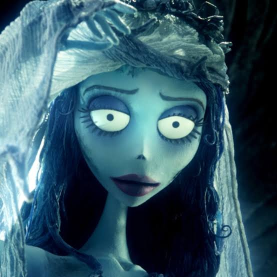

Películas de animación
Tim Burton empezó trabajando como animador en Disney y nunca ha abandonado la animación. En sus películas de stop-motion cada muñeco se mueve a mano, fotograma a fotograma, como en Corpse Bride o The Nightmare Before Christmas, que produjo y dirigió Henry Selick.
